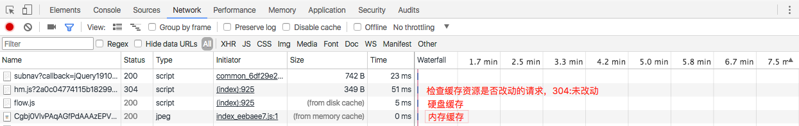

怎么知道哪些资源是缓存了的？ 遵循步骤chrome -> Developer Tools -> Network标签 -> 页面访问或刷新，然后便可查看页面网络请求的相关记录：

缓存生效情况下，Size列情况下大致如下
| 缓存方式 | Size |
| ---------------|:----------------------------------------------------:|
| 协议缓存 | from cache、from memory cache、from disk cache |
| AppCache | from cache、from memory cache、from disk cache |
| service worker | from ServiceWorker |
304则表示：缓存到期情况下，浏览器发起头部询问，服务器返回未改动应答。这种情况下，虽然还是要进行网络请求，但是请求包体积很小。
通过在http协议头部添加特定字段，来实现的静态资源缓存。 相关字段有：Expires，Cache-control，Last-Modified/If-Modified-Since，Etag/If-None-Match，max-age=0/no-cache等。
| 字段名称 | 字段值 | | ---------------|:----------------------------------------------------:| | Expires | 过期时间（例如：Tue, 05 Sep 2017 07:06:20 GMT） | | Cache-control | private（默认值）、public、no-cache、max-age＝500等 |
Cache-control，拥有更多、更灵活的配置项，而且其优先级比Expires更高（如果其设置了max-age，则会覆盖Expires的设置）。
| Cache-directive| 说明 | | ---------------|:----------------------------------------------------:| | public | 所有内容都将被缓存(客户端和代理服务器都可缓存) | | private | 内容只缓存到私有缓存中(仅客户端可以缓存，代理服务器不可缓存) | | no-cache | 必须先与服务器确认返回的响应是否被更改，然后才能使用该响应来满足后续对同一个网址的请求。因此，如果存在合适的验证令牌 (ETag)，no-cache 会发起往返通信来验证缓存的响应，如果资源未被更改，可以避免下载。 | | no-store | 所有内容都不会被缓存到缓存或 Internet 临时文件中 | | must-revalidation/proxy-revalidation | 如果缓存的内容失效，请求必须发送到服务器/代理以进行重新验证 | | max-age=xxx (xxx is numeric) | 缓存的内容将在 xxx 秒后失效, 这个选项只在HTTP 1.1可用,并如果和Last-Modified一起使用时, 优先级较高 |
了解更多Expires、Cache-control的详情，点击前往。
缓存过期检查 Expires和Cache-control用于设置缓存时间和策略，而Last-Modified/If-Modified-Since和Etag/If-None-Match则用于缓存过期后，检查资源是否改动。如未改动，返回304状态，继续使用原有资源。否则，返回改动后的资源。
流程图（copy于网上）

关于HTML5 AppCache的文章，网上已经有很多，这里不再详述。接下来，要讲一些特别的点。
text/cache-manifest settings.setCacheMode(WebSettings.LOAD_DEFAULT); //缓存模式设置 settings.setAppCacheMaxSize(1024 * 1024 * 5); //缓冲大小设置 settings.setAppCachePath("xxxxxxx"); //缓存路径设置 settings.setAppCacheEnabled(true); //缓存是否打开设置 ``` * AppCache修改完成后，需要二次访问才能生效（即使通过updateready事件触发页面reload，也算是二次访问） * 所以，接下来着重讲一下如果保障每次资源更新，都能实现首次访问生效 * 本方案仅适用于Hybrid App项目 * 项目中放一个config配置文件（构建生成），用于html文件的版本控制，内容如下
```json
[{
"src": "dist/a.html",
"replace": "dist/a01.html",
}]
```
* 客户端读取config文件，把符合`src`的相关页面路径替换成对应的`replace`
* 这样就实现资源更新，html路径也更新，从而首次访问生效